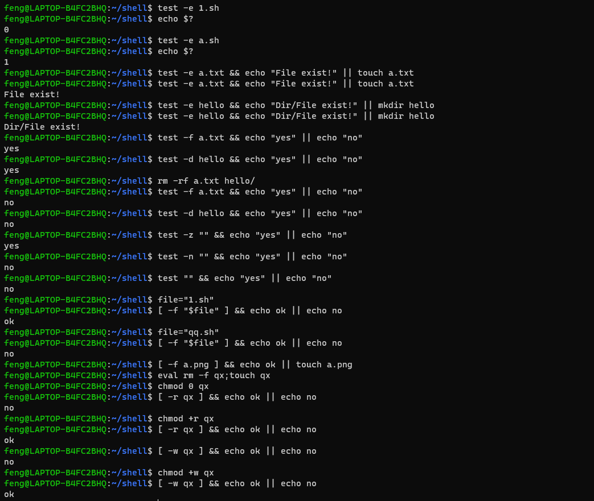
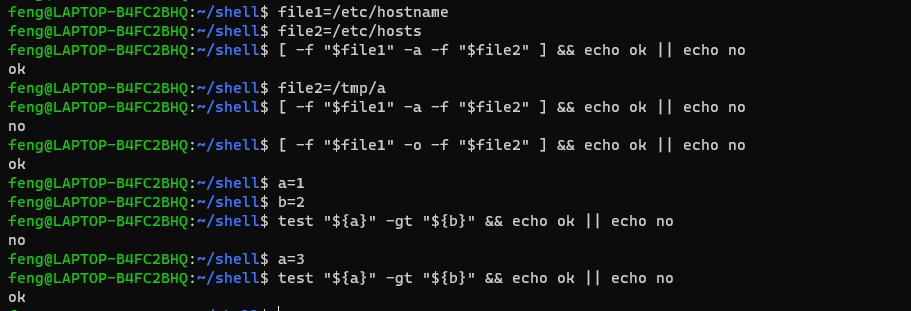

shell脚本开发之条件判断
把复杂的命令执行过程，通过逻辑代码，组成一个脚本文件，再去执行该文件。
read 命令
1 | read -p "tips" abc # 读取用户输入赋值 abc |
用于条件测试的命令
- test 表达式
- [表达式]
- [[表达式]]
- ((表达式))
test 表达式
test命令参数
- 关于文件类型判断真假
- -e 判断文件是否存在(普通文件，目录)，存在为真，不存在为假
- -f 判断是否为文件
- -d 判断是否为目录
- -b 判断是否为 block device
- -c 判断是否为 character device
- -s 判断是否为 socket 文件
- -p 判断是否为 FIFO (pipe) 文件
- -L 判断是否为连结档
- 关于文件权限判断真假
- -r 判断该文件是否
读取属性 - -w 判断该文件是否
写入属性 - -x 判断该文件是否
执行属性 - -u 判断该文件是否
SUID属性 - -g 判断该文件是否
SGID属性 - -k 判断该文件是否
Sticky bit属性 - -s 判断该文件是否为非空白文件
- -r 判断该文件是否
- 两个文件之间的比较
- -nt (newer than) 判断 file1 是否比 file2 新
- -ot (older than) 判断 file1 是否比 file2 旧
- -ef 判断 file1 和 file2 是否为同一个文件（可用于判断
hard link的判定上，意义在于判定两个文件是否同时指向同一个inode哩）
- 关于两个整数大小之间的判定
- -eq (equal) 两个数相等
- -ne (not equal) 两个数不等
- -gt (greater than) n1 大于 n2
- -lt (less than) n1 小于 n2
- -ge (greater than or equal) n1 大于等于 n2
- -le (less than or equal) n1 小于等于 n2
- 判断字符串的数据
- -z (zero) 判断字符串是否为
0如果是空字符串，返回true - -n (no zero) 判断字符串是否为
0如果是空字符串，返回false - = 相等返回
true - != 不等返回
false - ! 取反
- -z (zero) 判断字符串是否为
- 多重条件判定
实践
-
关于文件类型，权限判断真假
字符 英文写法 意义 %% -a 与 || -o 或 ! ! 非 1
2
3
4
5
6
7
8
9
10
11
12
13
14
15
16
17
18
19
20
21
22
23
24
25
26
27
28
29
30
31
32
33
34
35
36
37
38test -e 1.sh
echo $?
test -e a.sh
echo $?
# 文件存在打印提示，不存在则创建
test -e a.txt && echo "File exist!" || touch a.txt
test -e hello && echo "Dir/File exist!" || mkdir hello
test -f a.txt && echo "yes" || echo "no"
test -d hello && echo "yes" || echo "no"
test -z "" && echo "yes" || echo "no"
test -n "" && echo "yes" || echo "no"
test "" && echo "yes" || echo "no"
# 中括号测试
# 条件测试中，变量必须加上双引号
file="1.sh"
[ -f "$file" ] && echo ok || echo no
file="qq.sh"
[ -f "$file" ] && echo ok || echo no
# 更严谨的创建文件
[ -f a.png ] && echo ok || touch a.png
# 双中括号(暂时没啥区别)
# 验证权限
touch qx
chmod 0 qx
[ -r qx ] && echo ok || echo no
chmod +r qx
[ -r qx ] && echo ok || echo no
chmod +w qx
[ -w qx ] && echo ok || echo no
# -x 执行同理不测了
# 取反
[ ! -f 1.sh ] && echo yes || echo no
-
数值比较(整数)
在
[]中，可以用字符-gt -lt -ge等，也可以用> < >=比较。但需要加上转 义 符号。而[[]]中可以不加。1
2
3
4
5
6
7
8
9
10
11
12
13
14
15
16
17
18
19
20[ 2 > 1 ] && echo ok || echo no
[ 1 > 2 ] && echo ok || echo no
[ 1 \> 2 ] && echo ok || echo no
[ 1 -gt 2 ] && echo ok || echo no
[ 1 -lt 2 ] && echo ok || echo no
[[ 1 > 2 ]] && echo ok || echo no
[[ 1 = 2 ]] && echo ok || echo no
[[ 2 = 2 ]] && echo ok || echo no
[[ 2 != 2 ]] && echo ok || echo no
# 变量和 test 同理
test "${a}" -gt "${b}" && echo ok || echo no
# 逻辑符号处理
file1=/etc/hostname
file2=/etc/hosts
[ -f "$file1" -a -f "$file2" ] && echo ok || echo no
file2=/tmp/a
[ -f "$file1" -a -f "$file2" ] && echo ok || echo no
[ -f "$file1" -o -f "$file2" ] && echo ok || echo no
 -
双中括号
一般属于特殊场景的的语法正则匹配，最常用的还是[]1
2
3
4
5
6
7
8
9# [] 逻辑运算只能用 -a -o
# [[]] 逻辑运算能用 && ||
a=""
b="yuyu"
[[ -n "$a" && "$a" = "$b" ]] && echo ok || echo no
[[ -n "$a" || "$a" = "$b" ]] && echo ok || echo no
[[ -n "$a" && ! "$a" = "$b" ]] && echo ok || echo no
a="yu"
[[ -n "$a" && ! "$a" = "$b" ]] && echo ok || echo no
实战开发 (参数验证)
1 |
|
实战开发 (提供用户选择执行的脚本)
1 | # 准备两个脚本 |
逻辑判断总结
最常见就 [] 配合 -gt -lt 使用
| 测试表达式符号 | [] | test | [[]] | (()) |
|---|---|---|---|---|
| 边界是否需要空格 | 需要 | 需要 | 需要 | 不需要 |
| 逻辑操作符 | ! -a -o | ! -a -o | ! && || | ! && || |
| 整数比较 | -eq -gt -lt -ge -le | -eq -gt -lt -ge -le | -eq -gt -lt -ge -le 或 = > < >= <= | = > < >= <= |
| 字符串比较 | = == != | = == != | = == != | = == != |
| 支持通配符 | 不支持 | 不支持 | 支持 | 不支持 |